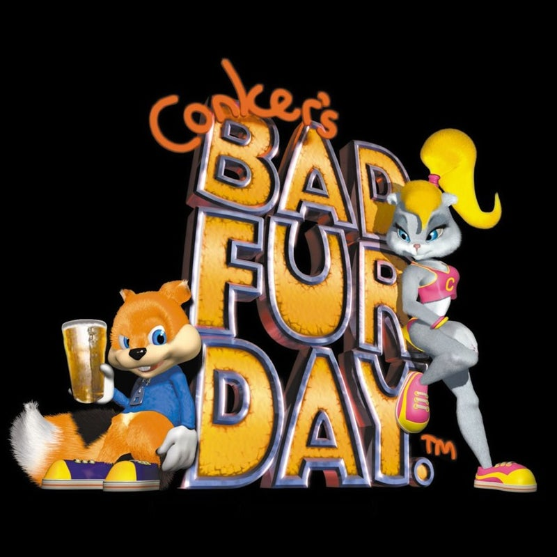

Conker's bad fur day
★★★★☆
Conker's Bad Fur Day is a 2001 action-adventure game developed by Rare for the Nintendo 64. Unlike traditional platformers of its time, it stood out for its mature content, dark humor, and adult themes, featuring foul language, violence, sexual innuendos, and satirical parodies of popular films.